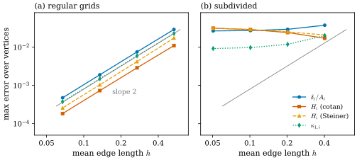
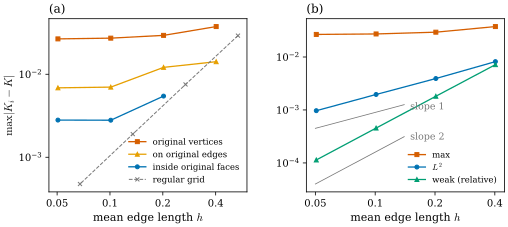

41.4 Numerical Tests and Convergence
Goals
- 정확히 성립해야 하는 항등식(Gauss–Bonnet, gradient의 합)과 근사로만 맞는 양을 구별하고, 앞의 것을 machine precision으로 검사할 수 있다.
- refinement 수열, 최대 오차와 넓이 가중 \(L^2\) 오차, 적분한(weak) 오차, log-log 기울기로 수렴을 실험하는 방법을 쓸 수 있다.
- 같은 surface와 같은 valence에서도 vertex의 배치에 따라 점마다의 curvature가 수렴하기도 하고 수렴하지 않기도 한다는 것을 실험으로 보이고, one-ring의 모양으로 설명할 수 있다.
- “수렴한다”가 정확히 무슨 뜻인지(정확, 적분한 뜻, 점마다) 구별해 말할 수 있다.
Prerequisites
- Section 41.2–41.3: 세 gradient와 그 항등식, discrete \(K_i\), \(H_i\), \(\kappa_{1,i}\)(Definition 41.3.3).
- Chapter 40: discrete Gauss–Bonnet theorem Theorem 40.2.1, dual area의 선택과 icosphere의 수렴 Figure 40.1.3, Remark 40.1.15.
- Track 1: 수렴의 함정 Section 31.2, 4-8 cylinder Example 31.2.8, jittered torus Figure 31.2.5.
Motivation
Section 41.3의 표는 “무엇을 정확히 지키는가”를 정리했다. 남은 질문은 정확하지 않은 부분이 얼마나 정확하지 않은가이다. mesh를 촘촘하게 하면 \(\delta_i/A_i\)는 \(K\)에, \(H_i\)는 \(H\)에 다가가는가? 얼마나 빨리? Chapter 40은 icosphere에서 그렇다는 것을 보였고(Figure 40.1.3), 동시에 dual area를 잘못 고르거나 vertex가 불규칙하면 그렇지 않을 수 있다고 경고했다(Remark 40.1.15). 이 절은 그 실험을 체계적으로 한다. 먼저 근사가 아니라 정확해야 하는 것부터 검사한다. 그런 검사는 구현의 오류를 잡는다.
Exact Tests
이 장과 앞 장이 증명한 등식 가운데 여럿은 mesh가 어떻든 정확히 성립한다. 이런 등식은 반올림 오차 수준으로 맞아야 하고, 그보다 크게 어긋나면 구현이 틀린 것이다. orientation이 뒤집힌 face 하나, 잘못 짝지은 cotangent 하나가 이런 검사에서 바로 드러난다.
Example 41.4.1 (identities that hold to machine precision). 다섯 닫힌 mesh(vertex는 차례로 10242, 18432, 32768, 2562, 386개. 마지막은 face마다 \(8\times8\) 칸으로 나눈 cube)에서 세 양 \(\abs{\sum_i\delta_i - 2\pi\chi}\)(G–B), \(\abs{\sum_i(L\mathbf{x})_i}\), \(\abs{\sum_i(K\mathbf{N})_i}\)를 계산했다(\(\chi\)는 셈으로 구한 Euler characteristic). 모두 \(10^{-11}\) 이하다.
| mesh | G–B | \(\sum L\mathbf{x}\) | \(\sum K\mathbf{N}\) |
|---|---|---|---|
| icosphere, level 5 | \(2.4\times10^{-12}\) | \(9\times10^{-15}\) | \(8\times10^{-15}\) |
| torus \(96\times192\) | \(4.5\times10^{-12}\) | \(3\times10^{-13}\) | \(9\times10^{-15}\) |
| subdivided torus | \(8.2\times10^{-12}\) | \(7\times10^{-14}\) | \(1.2\times10^{-14}\) |
| jittered sphere | \(6.2\times10^{-13}\) | \(1\times10^{-15}\) | \(1\times10^{-15}\) |
| cube \(8\times8\) | \(2.9\times10^{-13}\) | \(3\times10^{-17}\) | \(0\) |
(subdivided torus는 아래 Example 41.4.4의 level 4, jittered sphere는 Example 41.3.8(b)의 mesh를 level 4로 만든 것이다.) 첫 열은 discrete Gauss–Bonnet theorem(Theorem 40.2.1)이고, 둘째와 셋째 열은 넓이와 total mean curvature가 translation에 불변이라 gradient의 합이 \(0\)이라는 것이다(Proposition 41.1.3(a)). 같은 방법으로 vector area의 합, torque의 합, Euler 항등식(Section 41.2의 Implementation 상자), Schläfli formula(Theorem 41.2.9)도 반올림 오차 수준으로 맞는다. 닫힌 꼴로 알려진 값도 정확히 맞는다. 한 변이 \(1\)인 cube의 \(\mathcal{H} = -\tfrac12\sum\ell\theta\)는 face를 어떻게 나누든 정확히 \(-3\pi\)다(Example 40.4.12).
Verification: verify/v-41-4-convergence.py
반대로 sphere의 total mean curvature \(\sum H_{ij} \to -4\pi\)(Example 40.4.15(b))나 점마다의 \(K_i \to 1\)은 정확한 등식이 아니라 근사다. 근사를 검사하려면 mesh를 바꿔 가며 오차가 어떻게 줄어드는지를 봐야 한다.
Measuring Convergence
Remark 41.4.2 (error measures convention). 이 절에서 vertex마다의 근사값 \(q_i\)와 smooth 값 \(q(\mathbf{x}_i)\)(vertex는 smooth surface 위에 있다)를 다음 셋으로 비교한다. \(A_i\)는 mixed area다.
\(E_\infty\)은 가장 나쁜 vertex의 오차, \(E_2\)는 넓이로 가중한 평균 오차, \(E_\phi\)는 smooth test function \(\phi\)와 짝지어 적분한 오차, 곧 weak error(약한 오차)다. \(q = K\)일 때 \(A_iK_i = \delta_i\)이므로 \(E_\phi\)는 \(\abs{\sum_i\delta_i\phi(\mathbf{x}_i) - \int K\phi\,dA}\)이다. mesh의 크기는 평균 edge 길이 \(h\)로 재고, \(h\)를 반으로 줄일 때 \(E\)가 \(E/2^p\)이 되면 \(p = \log_2\big(E(h)/E(h/2)\big)\)를 observed order(관찰된 수렴 차수)라 한다. log-log 그래프에서 기울기다.
세 측도는 서로 다른 질문에 답한다. \(E_\infty \to 0\)은 모든 vertex에서 curvature를 믿을 수 있다는 뜻이고, \(E_2 \to 0\)은 나쁜 vertex가 있어도 그 넓이의 몫이 줄어든다는 뜻이며, \(E_\phi \to 0\)은 curvature를 적분해서 쓰는 계산(평균, 힘, energy)이 맞는다는 뜻이다. 노트의 실험도 \(L^2\)와 \(L^\infty\) 오차를 mean edge length에 대해 log-log로 그리라고 한다 [Cr §5.6].
Regular Refinement
Example 41.4.3 (the regular torus grids).
torus_mesh(2, 0.8, n, 2n)(\(n = 12, 24, 48, 96\), \(h = 0.536, 0.269, 0.135, 0.067\))에서 바깥쪽 normal의 정확한 값 \(K = \cos u/(r(R + r\cos u))\), \(H = -(R + 2r\cos u)/(2r(R + r\cos u))\)와 비교하면, \(K_i = \delta_i/A_i\)의 \(E_\infty\)는 \(2.9\times10^{-2}\), \(7.5\times10^{-3}\), \(1.9\times10^{-3}\), \(4.8\times10^{-4}\)이고 observed order가 \(1.95, 1.99, 2.00\)이다. cotan \(H_i\), Steiner \(H_i\), \(\kappa_{1,i}\)도 모두 order \(2\)로 수렴하고(\(n = 96\)에서 \(E_\infty\)가 \(1.8\times10^{-4}\), \(2.6\times10^{-4}\), \(3.8\times10^{-4}\)), \(E_2\)와 weak error(\(\phi = x^2 + y^2\))도 order \(2\)다. 이 mesh는 \((u, v)\) 격자를 그대로 쓴 것이고 모든 vertex의 valence가 \(6\)이다.
Verification: verify/v-41-4-convergence.py
icosphere의 결과(Figure 40.1.3)와 합치면, 규칙적인 mesh에서는 이 장의 curvature들이 모두 \(O(h^2)\)로 점마다 수렴한다. 그러면 “규칙적”은 무엇을 뜻하는가? valence가 6이면 되는가?
Same Valence, Different Placement
같은 torus를 다른 방법으로 촘촘하게 하자. 거친 torus_mesh(2, 0.8, 8, 16)에서 출발해 triangle마다 edge의 중점을 이어 넷으로 나누고(dgmesh.subdivide), 새 vertex를 torus 위의 가장 가까운 점으로 옮기기(\(z\)축을 포함하는 평면 안에서 관의 중심원을 향한 반지름 방향으로)를 되풀이한다. 원래 vertex는 그대로 있고, 새 vertex는 모두 valence가 \(6\)이며, 모든 vertex가 정확히 torus 위에 있다. 이런 mesh는 graphics에서 흔하다.
Example 41.4.4 (the subdivided torus). subdivision을 1–4번 한 mesh(\(h = 0.403, 0.202, 0.101, 0.051\))에서 \(K_i = \delta_i/A_i\)의 \(E_\infty\)는 \(0.038, 0.029, 0.027, 0.027\)이고, cotan \(H_i\)의 \(E_\infty\)는 \(0.017, 0.024, 0.029, 0.031\)로 오히려 커진다. 점마다는 수렴하지 않는다. 그런데 \(E_2\)는 \(K\)에서 \(8.2\times10^{-3}\), \(3.9\times10^{-3}\), \(2.0\times10^{-3}\), \(9.7\times10^{-4}\)으로 order \(1\)이고, weak error \(\abs{\sum\delta_i\rho_i^2 - \int K\rho^2\,dA}\)(\(\rho^2 = x^2 + y^2\), \(\int K\rho^2\,dA = 4\pi^2Rr = 63.165\))는 \(0.45, 0.11, 0.029, 0.0072\)로 order \(2\)다. 오차가 큰 vertex의 위치도 정해져 있다. 원래 mesh의 vertex 128개에서 \(\abs{K_i - K}\)의 최댓값은 \(0.027\)에 머물고, 원래 edge 위의 vertex에서는 \(0.0069\), 원래 face 안쪽의 vertex에서는 \(0.0028\)에 머문다.
Verification: verify/v-41-4-convergence.py
Figure 41.4.1은 두 수열을 같은 축에 놓는다. 왼쪽 (a)의 regular grid에서는 네 곡선이 모두 회색 기울기 \(2\)의 안내선과 나란히 내려간다. 오른쪽 (b)의 subdivided mesh에서는 같은 네 곡선이 \(10^{-2}\) 근처에서 수평이다. 두 수열 모두 같은 surface, 같은 valence, 같은 크기의 \(h\)인데 결과가 다르다. Figure 41.4.2가 그 이유의 실마리를 준다. 왼쪽 (a)에서 오차를 vertex의 종류별로 나누면 세 곡선이 각자 다른 높이에서 수평이고, 회색 점선(regular grid)만 내려간다. 원래 vertex(주홍)가 가장 나쁘고, 원래 edge 위(주황), 원래 face 안쪽(파랑) 순이다. 오른쪽 (b)는 subdivided mesh의 세 측도다. 최댓값(주홍)은 평평하지만 \(L^2\)(파랑)는 기울기 \(1\), weak error(초록)는 기울기 \(2\)로 내려간다. 나쁜 vertex는 줄지 않지만 그것이 차지하는 넓이의 몫이 줄기 때문에 \(L^2\)가 줄고, 적분하면 오차가 이웃끼리 상쇄되어 weak error는 regular grid와 같은 속도로 준다.

torus_mesh(2, 0.8, n, 2n), \(n = 12, 24, 48, 96\). (b) torus_mesh(2, 0.8, 8, 16)을 1–4번 midpoint subdivision하고 새 vertex를 torus로 옮긴 mesh. 두 수열 모두 모든 vertex의 valence가 \(6\)이다.
읽는 법: 가로축은 평균 edge 길이 \(h\), 세로축은 \(E_\infty\)(둘 다 log)다. 파랑 동그라미 \(\delta_i/A_i\), 주홍 사각형 cotan \(H_i\), 주황 삼각형 Steiner \(H_i\), 초록 마름모 \(\kappa_{1,i}\)이고, \(A_i\)는 mixed area다. 회색 직선은 기울기 \(2\)다.
볼 것: (a)는 observed order가 마지막 구간에서 모두 \(2.00 \pm 0.01\)이다. (b)는 \(h\)를 8배 줄여도 오차가 거의 그대로이고(마지막 mesh에서 \(0.027, 0.031, 0.031, 0.009\)), cotan \(H_i\)는 오히려 커진다.
본문과의 연결: Example 41.4.3, Example 41.4.4.
torus_mesh(2, 0.8, 8, 16)의 vertex 128개, 주황은 원래 edge 위의 vertex, 파랑은 원래 face 안쪽의 vertex(level 1에는 없다), 회색 점선은 regular grid다. (b) 주홍이 \(E_\infty\), 파랑이 \(E_2\), 초록이 weak error \(\abs{\sum\delta_i\rho_i^2 - 4\pi^2Rr}\)를 \(4\pi^2Rr\)로 나눈 것(\(\rho^2 = x^2 + y^2\))이다. 회색 짧은 선은 기울기 \(1\)과 \(2\)다.
볼 것: (a) 세 종류의 오차가 level 4에서 \(0.027\), \(0.0069\), \(0.0028\)로 각자 멈춘다. (b) \(E_2\)의 order는 \(1.0\), weak error의 order는 \(2.0\)이다.
본문과의 연결: Example 41.4.4, Example 41.4.5. level 3의 mesh를 \(\abs{K_i - K}\)로 칠한 interactive version에서 오차가 원래 mesh의 vertex와 edge를 따라 그물처럼 놓인 것을 볼 수 있다.왜 이런 일이 생기는가? subdivision은 원래 vertex의 one-ring을 매번 절반 크기로 줄일 뿐 모양을 바꾸지 않는다. 그 모양은 거친 mesh가 정한 것이고, tangent plane에서 보면 대칭이 아니다. 반면 regular grid의 one-ring은 \((u, v)\) 격자의 한 칸을 3차원으로 옮긴 것이라, \(h \to 0\)에서 평행사변형 격자의 hexagon 모양에 다가간다. 그래서 관건은 \(h\)가 아니라 \(h\)로 나누어 본 one-ring의 모양이다. 다음 예가 이것을 따로 떼어 본다.
Example 41.4.5 (fixed one-ring shapes). 평면의 star 하나(link vertex \(P_1, \dots, P_m\))를 \(h\)배로 줄여 quadric surface \(z = \tfrac12(ax^2 + 2bxy + cy^2)\)(원점에서 \(K = ac - b^2\)) 위로 들어 올리고 원점의 \(\delta_i/A_i\)를 보자. \(h = 10^{-3}\)에서(그보다 작게 해도 넷째 자리까지 같다) 다음 값이 나온다(Exercise 41.4.5).
| link shape | paraboloid | saddle | tilted |
|---|---|---|---|
| regular hexagon | \(1.0000\) | \(-1.0000\) | \(-0.9500\) |
| lattice hexagon | \(1.0000\) | \(-1.0000\) | \(-0.9500\) |
| irregular hexagon | \(1.0000\) | \(-1.0952\) | \(-1.0536\) |
| regular pentagon | \(1.0000\) | \(-0.8090\) | \(-0.7514\) |
| square | \(1.0000\) | \(-1.0000\) | \(-0.9100\) |
“lattice hexagon”은 \(P_{k+3} = -P_k\)이고 \(P_2 = P_1 + P_3\)인 hexagon, 곧 평행사변형 격자의 한 vertex의 이웃이다(정육각형은 그 특수한 경우다). “irregular hexagon”은 정육각형의 반지름만 \(1, 0.7, 1.2, 0.9, 1.1, 0.8\)배로 바꾼 것이고, paraboloid는 \((a, b, c) = (1, 0, 1)\)(\(K = 1\)), saddle은 \((1, 0, -1)\)(\(K = -1\)), tilted는 \((1.3, 0.2, -0.7)\)(\(K = -0.95\))이다. lattice hexagon은 세 surface 모두에서 정확하다. 나머지는 paraboloid처럼 방향에 무관한 surface에서만 맞고, 방향이 있는 surface에서는 \(h \to 0\)이어도 틀린 값으로 간다. regular pentagon은 대칭이 커도 saddle에서 \(-0.809\)다. square는 축 방향의 curvature만 보아 tilted surface에서 \(ac = -0.91\)을 준다.
Verification: verify/v-41-4-convergence.py
torus로 돌아가면, one-ring이 lattice hexagon에서 얼마나 벗어났는지를 \(\max_k\abs{P_k + P_{k+3}}\)와 \(\max_k\abs{P_{k+1} - P_k - P_{k+2}}\)의 합을 평균 edge 길이로 나눈 값으로 잴 수 있다(tangent plane에 projection한 값). regular grid에서는 \(n = 24, 48, 96\)에서 \(0.41, 0.20, 0.10\)으로 \(h\)에 비례해 \(0\)에 간다. subdivided mesh에서는 level 2–4에서 원래 vertex가 \(1.20\), 원래 edge 위가 \(0.96\), 원래 face 안쪽이 \(0.11\)–\(0.12\)로 줄지 않는다. 오차가 멈추는 세 높이와 순서가 같다. 이것은 실험이 보여 주는 관계이고, 이 절에서 정리로 증명하지는 않는다.
Remark 41.4.6 (what is known). 강의 슬라이드는 vertex의 valence가 4나 6이 아니면 angle defect가 점마다 수렴하지 않는다는 결과를 [Borrelli03]에서 인용한다 [CMU-DDG L16] slide 18. Example 41.4.5는 이것과 대체로 맞는다. 다음은 그 표를 읽은 해석이다. 평면 lattice의 한 점의 이웃 모양은 valence 4(평행사변형)와 6(위의 hexagon)에서 나오고, 그런 모양 쪽으로 다가가지 않는 one-ring에서는 값이 틀린 극한으로 간다. 거꾸로 valence가 6이어도 모양이 lattice로 다가가지 않으면 수렴하지 않는다는 것이 Example 41.4.4이고, valence 5인 icosphere의 vertex에서 mixed area로 수렴하는 것(Figure 40.1.3)은 sphere가 방향에 무관한 surface이기 때문으로 볼 수 있다(regular pentagon은 paraboloid에서 맞았다). square는 tilted surface에서 틀렸으므로, valence 4의 정확한 조건은 이 표보다 더 섬세하다. 원 논문의 정확한 가정은 확인하지 못했다. mean curvature에 대해서는 Chapter 31이 [Hildebrandt06]를 소개했다(Section 31.2). polyhedral surface의 열이 smooth surface에 Hausdorff distance로 수렴하고 normal도 수렴하면(이 논문은 이것을 totally normal convergence라 부르고, 넓이, metric, Laplace–Beltrami operator의 수렴과 동치임을 보인다), mean curvature vector를 test function과 짝짓는 functional로 본 weak mean curvature가 수렴한다는 내용이다(Sobolev space \(H^1_0\)의 dual norm으로). 그러나 그것을 piecewise linear 함수로 바꾼 discrete mean curvature(FEM의 mass matrix로 푼 것)는 \(L^2\)에서조차 수렴하지 않을 수 있고, 그 반례가 cylinder의 4-8 tessellation이다(Example 31.2.8과 같은 배치). 저자가 공개한 판(ZIB-Report 05-24)으로 확인했다. 위의 weak error의 order \(2\)는 그 진술과 같은 방향의 관찰이다. 또 discrete Laplacian 전반에 대해서는 원하는 성질(대칭, locality, linear precision, 양의 weight)을 일반 mesh에서 모두 갖는 것이 없다 [Wardetzky07](Section 31.3). 수렴도 그런 trade-off의 하나다.
What “Convergence” Means
이 장의 실험을 정리하면 “discrete curvature가 수렴한다”는 말에는 적어도 세 가지 뜻이 있다.
- 정확하다. 수렴이 필요 없다. 모든 mesh에서 등식이다. Gauss–Bonnet, gradient의 합, Schläfli formula, convex polyhedron의 Steiner formula가 그렇다.
- 적분한 뜻으로 수렴한다. smooth function과 짝지어 더한 값이 수렴한다. 이 장의 실험에서는 regular grid와 subdivided mesh 모두 order \(2\)였다. 넓이 가중 평균 오차 \(E_2\)는 그 중간이다.
- 점마다 수렴한다. 모든 vertex의 값이 smooth 값에 다가간다. vertex의 배치가 \(h \to 0\)에서 충분히 규칙적인 모양으로 다가가야 하고, dual area도 알맞게 골라야 한다(Figure 40.1.3의 barycentric area).
그래서 mesh의 curvature를 쓸 때는 어느 뜻이 필요한지부터 묻는다. topology를 세거나 energy를 적분하는 계산이면 앞의 두 뜻으로 충분하다. curvature를 vertex마다 시각화하거나 그 값으로 feature를 고르는 계산이면 셋째 뜻이 필요하고, 그때는 mesh의 품질이 결과를 정한다.
Summary
- 정확한 항등식(Gauss–Bonnet, gradient의 합, Schläfli)은 machine precision으로 검사한다. 이것이 구현의 오류를 잡는 첫 단계다(Example 41.4.1).
- 근사는 refinement 수열에서 \(E_\infty\), \(E_2\), weak error를 재고 log-log 기울기로 order를 읽는다(Remark 41.4.2).
- regular torus grid에서는 \(\delta_i/A_i\), cotan \(H_i\), Steiner \(H_i\), \(\kappa_{1,i}\)가 모두 \(O(h^2)\)로 점마다 수렴한다(Example 41.4.3).
- 같은 valence 6이어도 subdivision으로 만든 mesh에서는 점마다의 오차가 멈추고, \(E_2\)는 \(O(h)\), weak error는 \(O(h^2)\)이다. 원인은 \(h\)로 나누어 본 one-ring의 모양이다(Example 41.4.4, Example 41.4.5).
다음 절에서는 이 장의 gradient로 surface를 움직인다. 넓이의 gradient flow는 mean curvature flow이고, total mean curvature의 gradient flow는 Gauss curvature flow다. 그리고 \(\int H^2\,dA\)의 gradient flow인 Willmore flow를 더한다.
Exercises
Exercise 41.4.1 ★ Example 41.4.3의 \(E_\infty\)(\(K\)) 값으로 세 observed order를 직접 계산하여라. 이 order가 \(2\)이면, \(E_\infty = 10^{-6}\)을 얻으려면 \(n\)이 대략 얼마여야 하는가?
Solution
\(\log_2(0.029/0.0075) = 1.95\), \(\log_2(0.0075/0.0019) = 1.99\), \(\log_2(0.0019/0.00048) = 2.00\)이다(반올림한 값으로 계산하면 마지막 자리가 조금 다를 수 있다). order \(2\)면 \(n\)을 두 배로 할 때마다 오차가 \(\tfrac14\)이므로, \(n = 96\)의 \(4.8\times10^{-4}\)에서 \(10^{-6}\)까지는 \(\log_4(480) \approx 4.5\)번, 곧 \(n \approx 96\cdot2^{4.5} \approx 2200\)이다. 그때 vertex는 \(2n^2 \approx 10^7\)개다. 점마다의 정확도를 높이는 비용이 빠르게 커진다.
Exercise 41.4.2 ★ 닫힌 mesh에서 test function이 상수 \(\phi = 1\)이면 \(K\)의 weak error가 정확히 \(0\)임을 보여라. \(\phi = x^2 + y^2\)이면 왜 \(0\)이 아닌가?
Solution
\(\phi = 1\)이면 \(\sum_i\delta_i\phi = \sum_i\delta_i = 2\pi\chi\)(Theorem 40.2.1)이고 \(\int K\,dA = 2\pi\chi\)(Gauss–Bonnet theorem)이므로 차이가 \(0\)이다. \(\phi = \rho^2\)이면 \(\sum_i\delta_i\rho_i^2\)는 vertex마다 \(\delta_i\)에 그 점의 \(\rho^2\)를 곱하므로 dual cell 안에서 \(\rho^2\)이 변하는 몫과 \(\delta_i\)가 vertex마다 틀리는 몫이 남는다. 둘 다 이웃끼리 대부분 상쇄되어 \(O(h^2)\)가 된다.
Exercise 41.4.3 ★ 참인지 거짓인지 말하고 이유를 써라. (a) 모든 vertex의 valence가 6인 mesh에서는 \(\delta_i/A_i\)가 점마다 수렴한다. (b) 점마다 수렴하지 않는 mesh에서는 \(L^2\) 오차도 줄지 않는다. (c) \(\abs{\sum\delta_i - 2\pi\chi}\)가 \(10^{-6}\)이면 구현을 의심해야 한다. (d) regular pentagon 모양의 one-ring은 sphere에서도 saddle에서도 틀린 \(K\)로 간다.
Solution
(a) 거짓. subdivided torus(Example 41.4.4). (b) 거짓. 같은 mesh에서 \(E_2\)는 order \(1\)로 준다. 나쁜 vertex가 차지하는 넓이가 줄기 때문이다. (c) 참. discrete Gauss–Bonnet은 정확한 등식이므로 반올림 오차(\(n_0\epsilon\), 이 장의 mesh에서 \(10^{-11}\) 이하)보다 훨씬 큰 차이는 구현의 문제다(예: 각을 잘못 셈, 퇴화한 face). (d) 거짓. 방향에 무관한 paraboloid(\(K = 1\))에서는 정확했다. 틀리는 것은 saddle과 tilted surface이다(Example 41.4.5).
Exercise 41.4.4 ★★
Coding. unit sphere의 icosphere(level)(level 2–5)의 vertex를 접선 방향으로 무작위로(각 성분 \([-1, 1]\)의 균등 난수를 tangent plane에 projection하고 평균 edge 길이의 \(0.15\)배, seed = level) 흔든 뒤 sphere로 되돌려라. \(\delta_i/A_i\)와 \(H_i\)의 \(E_\infty\)와 weak error(\(\phi = z^2\), \(\int z^2\,dA = \tfrac{4\pi}{3}\), \(\int Hz^2\,dA = -\tfrac{4\pi}{3}\))를 비교하여라.
Solution
for level in (2, 3, 4, 5):
V, F = dm.icosphere(level)
E = dm.edges(F)
ell = np.linalg.norm(V[E[:, 0]] - V[E[:, 1]], axis=1).mean()
D = np.random.default_rng(level).uniform(-1, 1, V.shape)
D -= np.sum(D * V, 1, keepdims=True) * V # tangential random directions
V = V + 0.15 * ell * D
V /= np.linalg.norm(V, axis=1, keepdims=True) # jittered, still on the unit sphere
A, delta, H = dm.mass_voronoi(V, F), dm.angle_defect(V, F), dd.mean_curvature(V, F)
z2 = V[:, 2] ** 2 # test function; int z^2 dA = 4 pi / 3
print(f"level {level}: h = {ell:.4f} pointwise K {np.abs(delta / A - 1).max():.4f}, H {np.abs(H + 1).max():.4f} "
f"weak K {abs(np.sum(delta * z2) - 4 * np.pi / 3):.1e}, H {abs(np.sum(A * H * z2) + 4 * np.pi / 3):.1e}")
level 2: h = 0.2993 pointwise K 0.0624, H 0.0428 weak K 4.1e-04, H 8.1e-02
level 3: h = 0.1507 pointwise K 0.0469, H 0.0419 weak K 8.9e-05, H 2.1e-02
level 4: h = 0.0755 pointwise K 0.0479, H 0.0467 weak K 1.7e-05, H 5.1e-03
level 5: h = 0.0378 pointwise K 0.0796, H 0.0792 weak K 1.2e-06, H 1.3e-03점마다의 오차는 \(0.04\)–\(0.08\)에서 줄지 않고 level 5에서는 오히려 크다. 흔든 정도가 edge 길이에 비례하므로 one-ring의 모양이 \(h\)로 나누어 보아 일정하게 불규칙하기 때문이다. weak error는 \(H\)에서 level마다 약 \(\tfrac14\)로(order \(2\)), \(K\)에서는 그보다 빠르게 준다. 이것이 Chapter 31의 jittered torus(Figure 31.2.5)와 같은 현상을 sphere와 다른 test function에서 다시 본 것이다.
Exercise 41.4.5 ★★ Coding. Example 41.4.5의 표를 만들어라. 평면의 star를 \(h = 10^{-3}\)으로 줄여 \(z = \tfrac12(ax^2 + 2bxy + cy^2)\) 위로 들어 올리고, 원점의 \(\delta_i/A_i\)(mixed area)를 계산한다. lattice hexagon이 세 surface 모두에서 정확한 이유를 한 문장으로 설명하여라.
Solution
def star_curvature(P, h, a, b, c):
"""delta_i / A_i (mixed area) at the apex of the star with link h P (P: (m, 2), in order) on z = (a x^2 + 2 b x y + c y^2) / 2"""
Q = h * np.asarray(P, float)
V = np.vstack([[0, 0, 0], np.c_[Q, (a * Q[:, 0] ** 2 + 2 * b * Q[:, 0] * Q[:, 1] + c * Q[:, 1] ** 2) / 2]])
F = np.array([[0, 1 + k, 1 + (k + 1) % len(P)] for k in range(len(P))])
return dm.angle_defect(V, F)[0] / dm.mass_voronoi(V, F)[0] # boundary vertices do not matter here
polygon = lambda m: np.c_[np.cos(2 * np.pi * np.arange(m) / m), np.sin(2 * np.pi * np.arange(m) / m)]
stars = {"regular hexagon": polygon(6), "lattice hexagon": [[1, 0], [1.3, 0.8], [0.3, 0.8], [-1, 0], [-1.3, -0.8], [-0.3, -0.8]],
"irregular hexagon": polygon(6) * np.array([1, 0.7, 1.2, 0.9, 1.1, 0.8])[:, None],
"regular pentagon": polygon(5), "square": polygon(4)}
surfaces = {"paraboloid K = 1": (1, 0, 1), "saddle K = -1": (1, 0, -1), "tilted K = -0.95": (1.3, 0.2, -0.7)}
print(f"{'link shape':18s}" + "".join(f"{name:>18s}" for name in surfaces))
for name, P in stars.items():
print(f"{name:18s}" + "".join(f"{star_curvature(P, 1e-3, *abc):18.4f}" for abc in surfaces.values()))
link shape paraboloid K = 1 saddle K = -1 tilted K = -0.95
regular hexagon 1.0000 -1.0000 -0.9500
lattice hexagon 1.0000 -1.0000 -0.9500
irregular hexagon 1.0000 -1.0952 -1.0536
regular pentagon 1.0000 -0.8090 -0.7514
square 1.0000 -1.0000 -0.9100star_curvature는 apex와 link로 star 하나를 만들고 apex의 angle defect를 mixed area로 나눈다. link의 vertex는 boundary vertex라 그 값은 쓰지 않는다. lattice hexagon은 평행사변형 격자 \(\{mP_1 + nP_3\}\)의 한 점의 이웃이므로, 평면 전체를 그 격자로 덮은 mesh를 quadric surface에 들어 올리면 모든 vertex가 같은 모양의 one-ring을 갖는다. 그런 mesh에서는 Gauss–Bonnet과 대칭이 함께 작용해 점마다의 값이 맞게 된다고 볼 수 있다. 이것은 해석이고, 정확한 증명은 [Borrelli03]의 주제다.